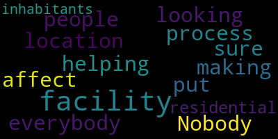

[Reporter]: New tonight here at 11 o'clock, a victory for Medford neighbors who fought to keep a methadone clinic from opening near a school there. But as Brandon Truitt shows us, that clinic may still open in their neighborhood. This company applied for a special permit back in April and ever since residents have really been pushing back against the idea. Tonight, a small win with that company rescinding its request for now.
[Gallagher]: And it's very tough because I actually walk my children to parks, to school every day, as do many other parents in the neighborhood.
[Reporter]: Breanne Gallagher has her hands full with two kids under the age of five. She just so happens to live right down from Salem Street. That's where a methadone clinic hoped to set up shop. It's just a few blocks from an elementary school, park and businesses with hundreds of families living nearby.
[Gallagher]: I think it's tough to provide the right meaningful dialogue on that to children that are that young. especially elementary school children, which is primarily the kids that you see walking around at that time of day.
[Reporter]: According to a study that measured the center's potential impacts, the facility would consist of a reception area, medical exam rooms, and an in-house dispensary overseen by a medical director. It was the dispensary service that drove dozens to show up at Tuesday's city council meeting. Residents were set to express concerns, but it was announced the company, Habit Opco, had rescinded its request. The company, which operates methadone centers in Springfield and Boston, cited community feedback.
[Scarpelli]: Nobody was against the process of helping people. But what everybody was looking for was making sure that this facility or a facility like this would be put in a location where it didn't affect residential inhabitants.
[Reporter]: In its letter to the City Council, the company says it's not closing the door on a treatment center in Medford, saying, quote, we look forward to working with the city to find an appropriate location for a CTC and thank all those who have provided helpful insights over the last two months. And this fight is not over. People who came to the City Council meeting, making one thing clear, they do not want a dispensary like this anywhere in this city. In Medford, Brandon Truitt, WBZ News. Brandon, thank you.
|
total time: 0.27 minutes total words: 37  |
|||
{kind=link}